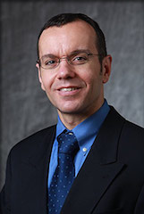

Dr. Mattheos A. G. Koffas
Career Development Associate Professor

Office: CBIS 4005D
Phone: 518-276-2220
E-mail: koffam@rpi.edu
Education
B.S. National Technical University, Athens, Greece, 1994Ph.D. Massachusetts Institute of Technology, 2000
Biography
Professor Mattheos Koffas, Ph.D., received his B.S. degree in Chemical Engineering from the National Technical University in Athens, Greece in 1994. He then joined the graduate program of the Department of Chemical Engineering at MIT where he worked on improving amino acid biosynthesis from Corynebacterium glutamicum. After completing his Ph.D. in 2000, he joined DuPont's Central Research and Development as a research scientist where he worked on engineering the carotenoid biosynthesis of an obligate methanotroph. In August of 2002 he joined the faculty of the Department of Chemical and Biological Engineering at SUNY Buffalo, as a tenure-track Assistant Professor, and was promoted to Associate Professor with tenure in the summer of 2008. In January of 2011, Prof. Koffas moved to his current position at RPI. In his research career, Dr. Koffas has worked with a variety of microorganisms and natural products including sulftated glycosaminoglycans, amino acids, polyphenols, fatty acids and terpenoids. He has published more than 170 peer-reviewed publications, more than 10 book chapters and holds 14 patents. He is co-Editor in Chief of Metabolic Engineering Communications, specialty Editor in Chief of Frontiers in Synthetic Biology and Editor of Biotechnology Advances. He is a member of the Editorials Boards of various Journals in the area of Bioengineering. His research has been funded by Federal agencies (ARPA-E, NSF, NIH), the State of New York (NYStem) and industrial partners (Evonik, Firstwave Technologies and Chromadex).
Research Interests
Metabolic Engineering, Synthetic Biology, Industrial Microbiology, Natural ProductsCurrent Research
The overall research effort is focused on Network, Metabolic and Cellular Engineering that aims at improvement of cellular properties or design new metabolic circuits using synthetic biology tools. More specifically, our research encompasses two broad themes: the biosynthesis of natural products from animal and plant species, and the development of microbial systems that can utilize different forms of waste (plastic waste, greenhouse gases etc.) as carbon and energy source. In the area of natural products biosynthesis, our lab has pioneered the animal-free production of animal sulfated glycosaminoglycans, such as chondroitin sulfate and heparin, as well as spider silk proteins and elastins. In the area of plant natural products, our lab was the first to demonstrate the biosynthesis of numerous polyphenolic compounds, such as flavonoids, stilbenes, curcuminoids and anthocyanins. In all cases, we use such natural products for the development of novel metabolic engineering techniques that include: protein engineering of plant P450s and glycoproteins, dynamic regulation of metabolic pathways for improving production titers and yields, and the development of engineered co-cultures for division of labor among microbial species.Additional profiles available:
Faculty Profile -- RPI
Faculty Profile -- Biology Department
Faculty Profile -- Chemical and Biological Engineering Department
Google Scholar
ResearchGate
Links
For more information about the department and Rensselaer Polytechnic Institute:
Collaborators

Dr. R Helen Zha, Rensselaer Polytechnic Institute

Dr. Blanca Barquera, Rensselaer Polytechnic Institute

Dr. James Swartz, Stanford

Dr. Richard Gross, Rensselaer Polytechnic Institute


Dr. Gyoo Yeol Jung, POSTECH

Dr. Wilfred Chen, University of Delaware